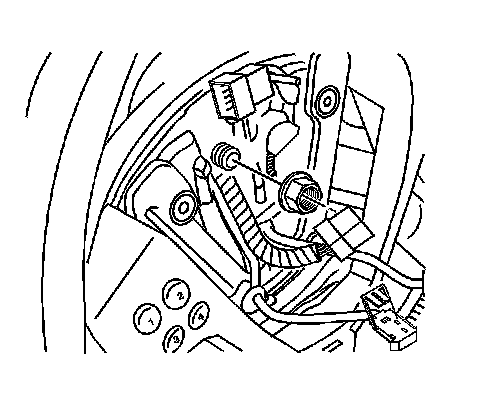
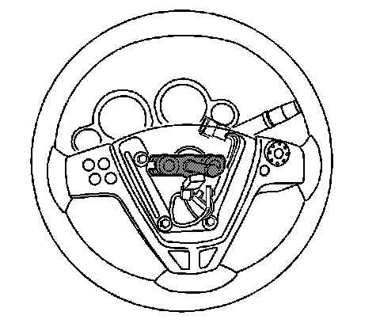

Steering Wheel: Service and Repair
Steering Wheel Replacement
Tools Required
* J 1859-A Steering Wheel Puller
* J 42578 Steering Wheel Puller Legs
Removal Procedure
1. Remove the inflatable restraint steering wheel module. Refer to Inflatable Restraint Steering Wheel Module Replacement (Service and Repair) .
2. Disconnect any electrical connectors as needed.

3. Remove the steering wheel nut.

4. Use puller J 1859-A and puller legs J 42578 to remove the steering wheel.
5. Remove the steering wheel from the steering column.
6. Transfer any parts as needed.
Installation Procedure
1. Align and install the steering wheel to the steering column.
Notice: Refer to Fastener Notice (Fastener Notice) .
2. Install the steering wheel nut.
Tighten the nut to 41 N.m (30 lb ft).
3. Connect any electrical connectors as needed.
4. Install the inflatable restraint steering wheel module. Refer to Inflatable Restraint Steering Wheel Module Replacement (Service and Repair) .